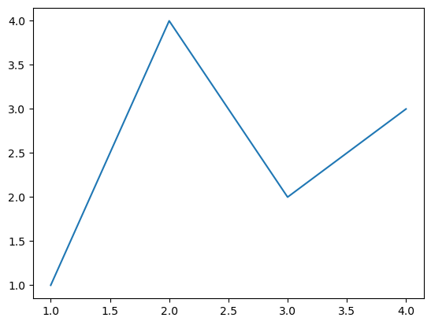
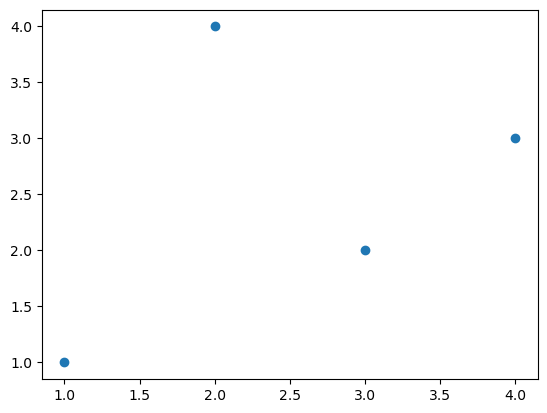
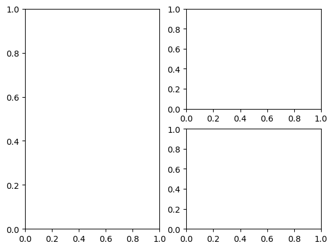
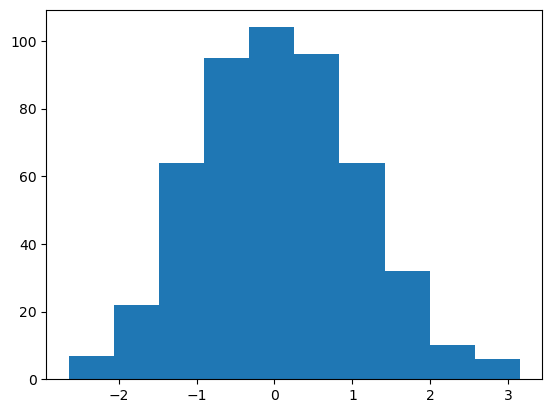
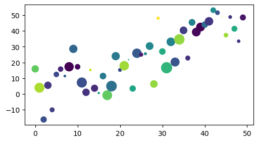

import matplotlib.pyplot as plt
import numpy as np
import matplotlib as mplfig, ax = plt.subplots()
ax.plot([1, 2, 3, 4], [1, 4, 2, 3])
plt.subplots??fig, ax = plt.subplots()
ax.scatter([1, 2, 3, 4], [1, 4, 2, 3])<matplotlib.collections.PathCollection at 0x13ae778b0>
fig1, axs1 = plt.subplot_mosaic([['left', 'right_top'], ['left', 'right_bottom']])
np.random.seed(1)data = {
'a': np.arange(50),
'c': np.random.randint(0, 50, 50),
'd': np.random.randn(50)
}data['d'].max(), data['d'].min()(1.9999756374163042, -2.2254950845537786)np.random.randn??plt.hist(np.random.randn(500));
np.arange(10)array([0, 1, 2, 3, 4, 5, 6, 7, 8, 9])np.random.randint(0, 50, 50)array([23, 16, 9, 27, 30, 48, 49, 37, 21, 0, 31, 29, 18, 39, 44, 49, 44,
23, 36, 17, 25, 5, 43, 10, 21, 4, 43, 46, 45, 10, 12, 35, 17, 11,
4, 23, 26, 1, 16, 11, 37, 25, 24, 16, 15, 41, 20, 19, 45, 47])np.random.randint??data['b'] = data['a'] + 10 * np.random.randn(50)
data['d'] = np.abs(data['d']) * 100fig, ax = plt.subplots(figsize=(5, 2.7), layout='constrained')
plt.scatter('a', 'b', c='c', s='d', data=data);
ax.scatter??data['d']array([8.91913759e+01, 1.73559653e+02, 6.31108331e+01, 9.07343356e+01,
3.74751973e+01, 4.73382754e+01, 4.54520824e+01, 8.53380627e+00,
1.50318838e+02, 1.16064112e+02, 4.82941397e+01, 1.80662901e+02,
9.15447608e+01, 6.97339847e+00, 8.49954772e+01, 5.06232307e+00,
7.05072381e+01, 1.67994195e+02, 1.99997564e+02, 1.15696327e+02,
1.93117963e+01, 1.55300741e+02, 1.00135380e+00, 6.49165533e+01,
1.55857293e+02, 2.38351806e+01, 1.08086617e+01, 1.01526292e+02,
9.59636776e+01, 1.27303148e+01, 6.98554164e+01, 2.22549508e+02,
1.26822935e+02, 1.39218201e+02, 1.92383191e+02, 9.91091266e+01,
3.80610804e+01, 7.47766359e+01, 1.31767750e+02, 1.33291008e+02,
6.84540250e+01, 1.25598233e+02, 4.96726354e+01, 3.29275803e+01,
1.18990846e-01, 3.07292625e+01, 1.83536999e+01, 5.52975151e+01,
1.55712804e+01, 5.72392274e+01])